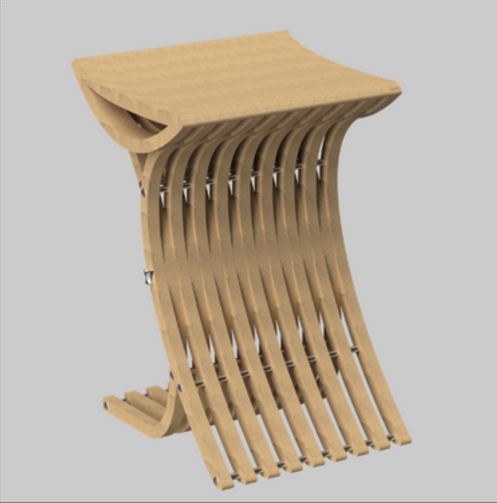
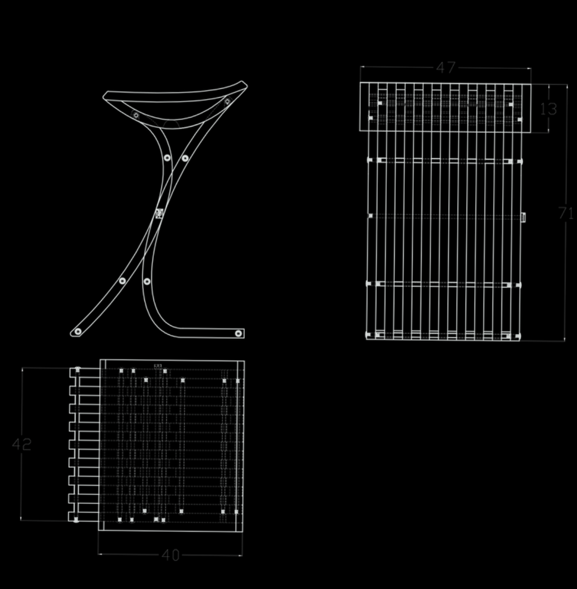
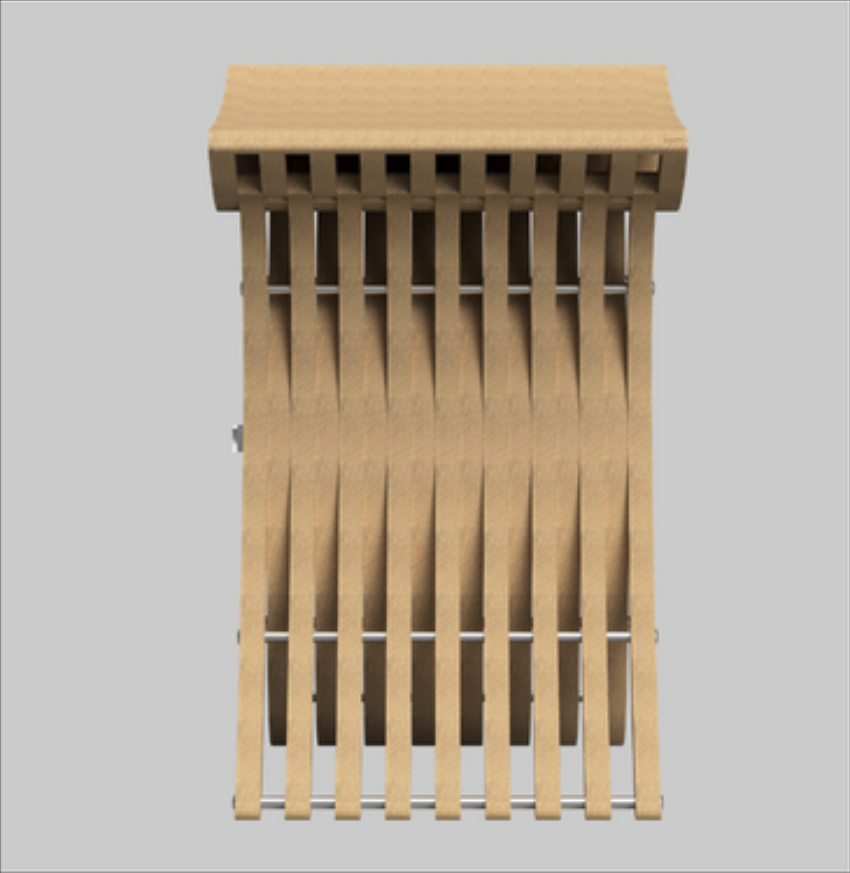
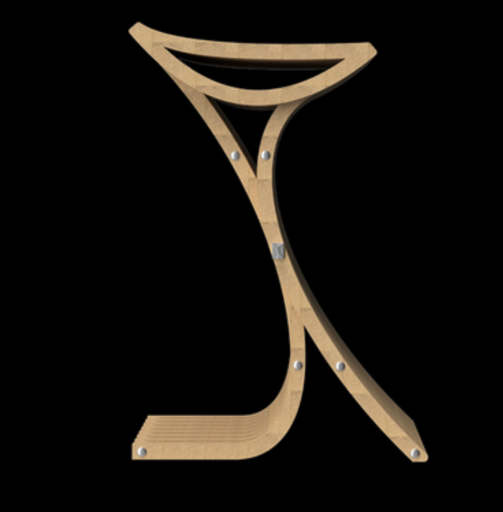
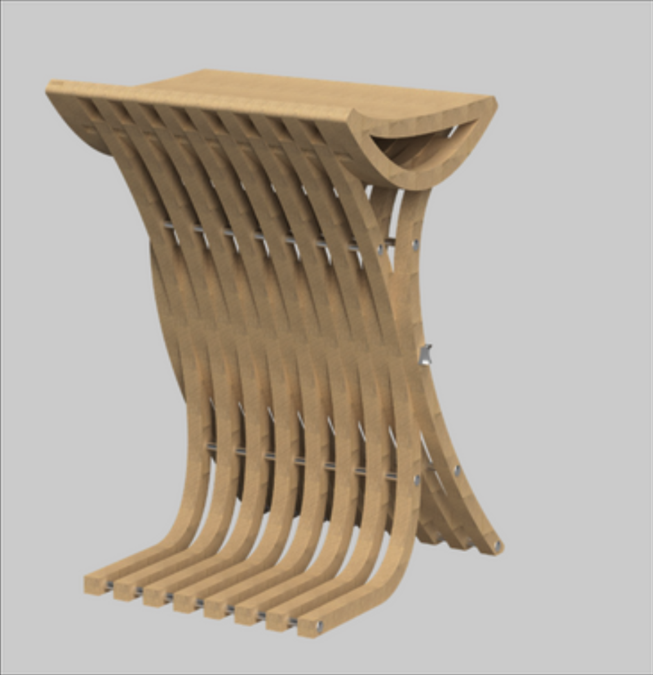
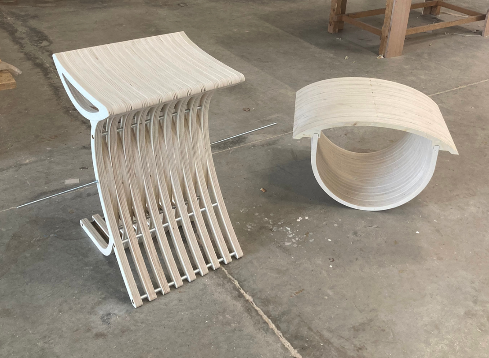
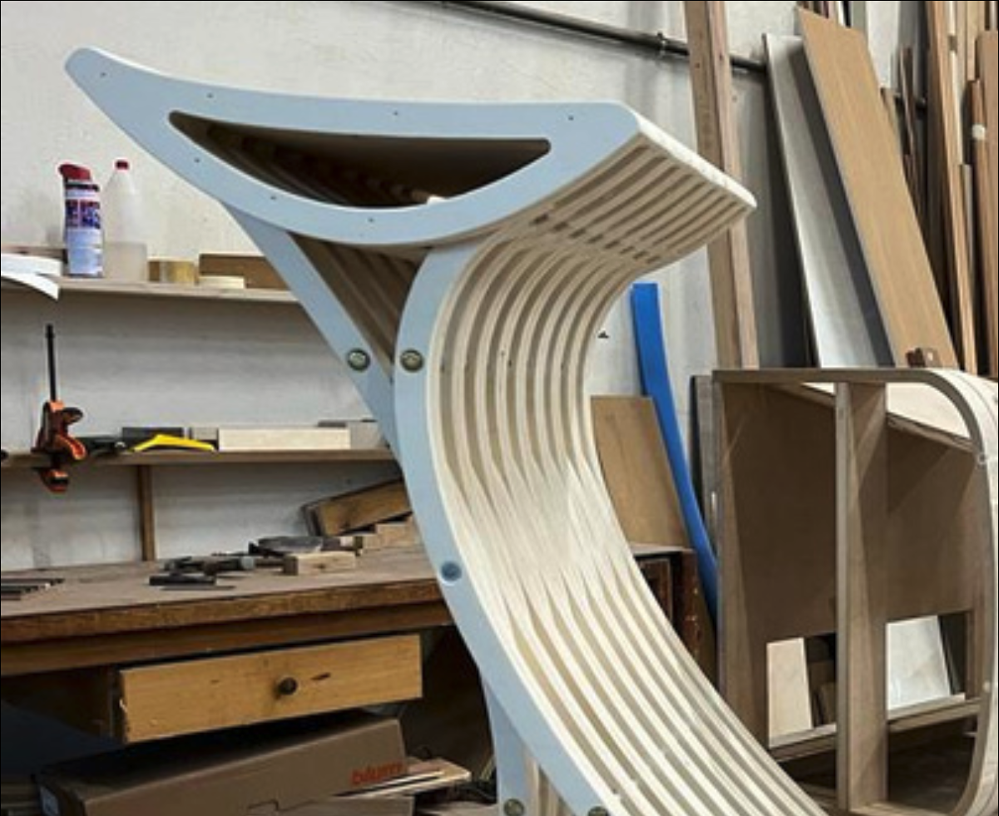
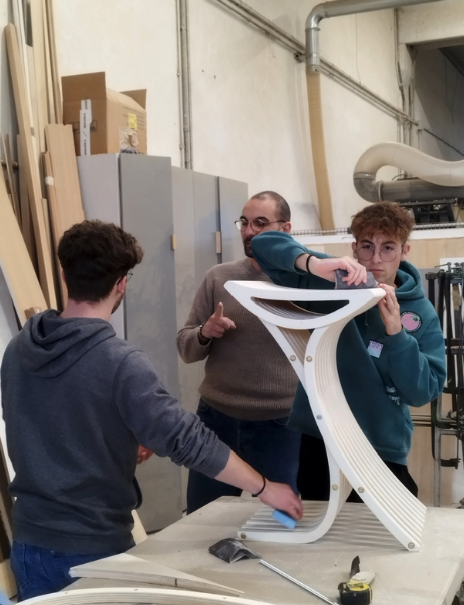
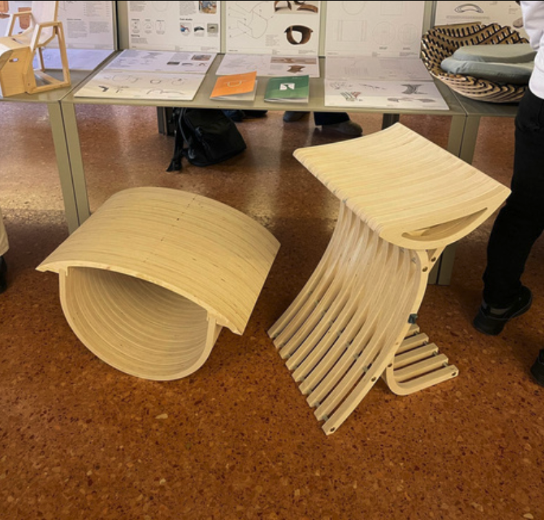
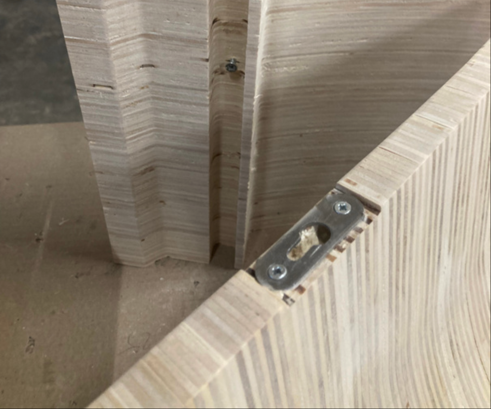

OTTOMAN
Wellbeing activators for home and office. A balanced composition of three back stretchers.
PROJECT FIT_NEST by TECHNOGYM
Team: Nicolò Bedetti, Alessandro Cappelletti, Andrea Adami, Paolo Ficalora
Ottoman was born as a provocation, a balanced composition of three back stretchers used for physical exercise to recreate an unusual stool.
The idea bases its origins on the study of shape, starting from the anatomy of the human body and then defining the curvatures of the individual stretchers. Through a detailed analysis of the various types of back bender we managed to find the perfect synthesis of three curvatures useful both for the exercise itself and for the possibility of being joined together to create a seat when completely assembled.
The structure is made up of birch wood sections which make the individual stretchers and consequently the entire stool light but solid at the same time.





Workshop Assembly & Making-Of




